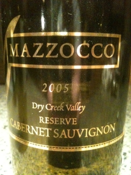

|
North America >
USA >
California >
Sonoma County >
Mazzocco >
Dry Creek Valley Reserve Cabernet Sauvignon
2005 Dry Creek Valley Reserve Cabernet Sauvignon
Mazzocco
Healdsburg, CA

Aged 36 months in French oak.
250 cases produced.
14.6% alcohol
750 ml

2009 tasting - A light red, this Cabernet has an incredible deep, buttery bouquet coupled to a tart, spicy flavor which strongly accentuates the Dry Creek Valley terroir. The aftertaste is chewy, spicy and then develops butter hints.
More about Cabernet Sauvignon.
|
|